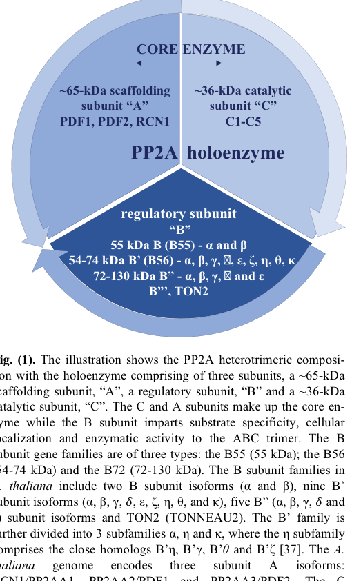

F6LAX4 is a bread wheat (Triticum aestivum) protein phosphatase 2A (PP2A) structural/scaffolding A subunit, a member of the PP2A regulatory subunit A (PR65 / PP2AA) family. It is a ~65 kDa, entirely alpha-helical protein built almost entirely of tandem HEAT/ARM-like repeats (~13-15 repeats) that fold into a horseshoe-shaped alpha-solenoid scaffold. The A subunit has no catalytic activity of its own; instead it is the organizing platform of the PP2A heterotrimeric holoenzyme. It binds the catalytic C subunit on one set of HEAT repeats to form the A-C core dimer, and recruits one of many regulatory B subunits (B/B55, B'/B56, B''/PR72 families) on another set of repeats. By assembling these complexes the A subunit determines which holoenzymes form and thereby modulates the activity, substrate specificity, and subcellular targeting of PP2A, a major serine/threonine phosphatase. PP2A holoenzymes act in both the cytoplasm and the nucleus. In plants, A-subunit scaffolds (best characterized as Arabidopsis RCN1/PP2AA1 and its paralogs) are required to assemble PP2A complexes that regulate hormone signaling and development, including auxin transport (e.g. PIN proteins), brassinosteroid signaling (e.g. dephosphorylation of BRI1 and BZR1), and abiotic/biotic stress responses. As a hexaploid-wheat gene, F6LAX4 corresponds to a set of homoeologous loci on chromosome group 5 (subgenomes A/B/D; e.g. TraesCS5A02G168400). Its conserved, mechanistically defined core role is as the structural scaffold of the PP2A holoenzyme.
| GO Term | Evidence | Action | Reason |
|---|---|---|---|
|
GO:0000159
protein phosphatase type 2A complex
|
IBA
GO_REF:0000033 |
ACCEPT |
Summary: F6LAX4 is a PP2A scaffolding/structural A subunit (PR65/PPP2AA family), a HEAT-repeat solenoid that is a defining, obligate component of the PP2A heterotrimeric holoenzyme. The A subunit binds the catalytic C subunit to form the A-C core and recruits a regulatory B subunit, so part_of the protein phosphatase type 2A complex is the most appropriate cellular component term.
Reason: This is the core localization/complex membership for an A-subunit. The IBA assignment (GO_Central, with experimentally annotated orthologs across yeast, fly, worm, mouse, and Dictyostelium in the WITH/FROM column) is fully consistent with the deeply conserved, unambiguous PP2A-A scaffold architecture (HEAT-repeat solenoid; ~65 kDa) seen in this protein. The A subunit's defining role is to scaffold the PP2A holoenzyme, so membership in the PP2A complex is its core cellular component.
Supporting Evidence:
file:WHEAT/F6LAX4/F6LAX4-deep-research-falcon.md
The A subunit binds the **catalytic C subunit** to form the **PP2A core enzyme (A–C dimer)** and provides the platform for **regulatory B-subunit recruitment**. This is the principal function of a PP2AA protein; it is a scaffold, not the catalytic phosphatase itself.
|
|
GO:0019888
protein phosphatase regulator activity
|
IBA
GO_REF:0000033 |
ACCEPT |
Summary: The PP2A A/PR65 subunit has no catalytic activity; its molecular function is to act as a protein phosphatase regulator. By scaffolding the catalytic C subunit and recruiting B regulatory subunits, the A subunit is required for holoenzyme assembly and thereby modulates phosphatase activity and substrate specificity. GO:0019888 protein phosphatase regulator activity is the most-specific applicable MF term for an A subunit.
Reason: This is the core molecular function for the A-subunit. The older term GO:0008601 (protein phosphatase type 2A regulator activity) is obsolete and merged into GO:0019888 (verified via QuickGO), so there is no more specific replacement term available. The IBA assignment is appropriate and consistent with the conserved scaffold role. Note this is an informative regulator term, not the uninformative "protein binding".
Supporting Evidence:
file:WHEAT/F6LAX4/F6LAX4-deep-research-falcon.md
The **primary function** of a PP2A-A/PR65 protein is **not catalysis**; rather, it is to:
file:WHEAT/F6LAX4/F6LAX4-deep-research-falcon.md
enable recruitment of different B subunits, thereby indirectly controlling **substrate specificity**, **localization**, and **activity modulation** of PP2A holoenzymes.
|
|
GO:0005634
nucleus
|
IEA
GO_REF:0000117 |
ACCEPT |
Summary: PP2A holoenzymes, assembled around the A scaffold subunit, act in multiple subcellular compartments including the nucleus, where they dephosphorylate nuclear substrates (e.g. transcription factors such as BZR1 in plant signaling). Nuclear localization is consistent with the diverse compartment distribution of plant A/B subunits.
Reason: Plant PP2A reviews report that A and B subunits show diverse subcellular localizations and that PP2A holoenzymes function in the nucleus (e.g. dephosphorylation of nuclear transcription factors). The ARBA IEA located_in nucleus is a reasonable, family-consistent localization. No contradicting evidence exists, so accept.
Supporting Evidence:
file:WHEAT/F6LAX4/F6LAX4-deep-research-falcon.md
Plant PP2A B′-containing complexes can dephosphorylate BR pathway components (e.g., BRI1 receptor kinase at the membrane and BZR1 transcription factor in the nucleus)
file:WHEAT/F6LAX4/F6LAX4-deep-research-falcon.md
Reviews indicate plant A and B subunits show **diverse predicted/observed subcellular localizations**, whereas catalytic C subunits are more predominantly cytosolic.
|
|
GO:0005737
cytoplasm
|
IEA
GO_REF:0000117 |
MODIFY |
Summary: PP2A is predominantly a cytoplasmic/cytosolic phosphatase, and its catalytic C subunits are described as predominantly cytosolic. The A scaffold subunit assembles holoenzymes in the cytoplasm (e.g. acting on PIN auxin transporters and membrane-proximal signaling components), so cytoplasmic localization is well supported. GO_Central additionally asserts the more specific term cytosol (GO:0005829) for this protein, so the general cytoplasm term can be refined.
Reason: Cytoplasm (GO:0005737) is correct but more general than warranted. The UniProt entry's GO cross-references for this protein include an explicit GO:0005829 cytosol annotation with IBA:GO_Central evidence (present in the F6LAX4 UniProt record but dropped from the fetched GOA snapshot, which retained only the ARBA IEA cytoplasm term). Cytosol is the appropriate specific compartment for a soluble PP2A scaffold/holoenzyme, and the deep research notes that PP2A catalytic subunits are predominantly cytosolic. Modifying the general cytoplasm IEA to the GO_Central-supported cytosol increases specificity without loss of accuracy.
Proposed replacements:
cytosol
Supporting Evidence:
file:WHEAT/F6LAX4/F6LAX4-deep-research-falcon.md
Reviews indicate plant A and B subunits show **diverse predicted/observed subcellular localizations**, whereas catalytic C subunits are more predominantly cytosolic.
|
|
GO:0032991
protein-containing complex
|
IEA
GO_REF:0000117 |
MARK AS OVER ANNOTATED |
Summary: The A subunit is indeed part of a protein-containing complex (the PP2A holoenzyme), so this annotation is not wrong. However, GO:0032991 is a root-level, uninformative term that is fully subsumed by the more specific GO:0000159 (protein phosphatase type 2A complex) already annotated to this protein.
Reason: GO:0032991 protein-containing complex is a high-level grouping term that conveys no specific functional information beyond what GO:0000159 (protein phosphatase type 2A complex) already states. Because the more-specific PP2A complex term is present and accepted, this generic complex annotation is an over-annotation and should be flagged as such.
Supporting Evidence:
file:WHEAT/F6LAX4/F6LAX4-deep-research-falcon.md
The A subunit binds the **catalytic C subunit** to form the **PP2A core enzyme (A–C dimer)** and provides the platform for **regulatory B-subunit recruitment**.
|
Q: Which PP2A catalytic C subunits and regulatory B subunits does the wheat A-subunit F6LAX4 assemble with in vivo, and do the three homoeologs (5A/5B/5D) form distinct or redundant holoenzymes?
Q: In which wheat tissues, developmental stages, and stress conditions is F6LAX4 expressed, and does it contribute to auxin transport, brassinosteroid signaling, or stress responses as seen for the Arabidopsis RCN1/PP2AA scaffolds?
Experiment: Express epitope-tagged F6LAX4 in wheat (or a heterologous plant system) and identify co-purifying PP2A catalytic C and regulatory B subunits by affinity purification mass spectrometry, validating direct interactions by yeast two-hybrid / BiFC.
Hypothesis: F6LAX4 functions as the structural scaffold of wheat PP2A holoenzymes, physically bridging the catalytic C subunit and diverse regulatory B subunits.
Type: interactome / protein-complex characterization
Experiment: Determine the subcellular localization of fluorescently tagged F6LAX4 in plant cells and test whether it co-localizes with PP2A catalytic subunits in both cytoplasm and nucleus.
Hypothesis: F6LAX4 assembles PP2A holoenzymes in both the cytoplasm and the nucleus, consistent with the diverse compartment distribution of plant PP2A A/B subunits.
Type: subcellular localization
The research report should be a detailed narrative explaining the function, biological processes, and localization of the gene product. Citations should be given for all claims.
You should prioritize authoritative reviews and primary scientific literature when conducting research. You can supplement
this with annotations you find in gene/protein databases, but these can be outdated or inaccurate.
We are specifically interested in the primary function of the gene - for enzymes, what reaction is catalyzed, and what is the substrate specificity? For transporters, what is the substrate? For structural proteins or adapters, what is the broader structural role? For signaling molecules, what is the role in the pathway.
We are interested in where in or outside the cell the gene product carries out its function.
We are also interested in the signaling or biochemical pathways in which the gene functions. We are less interested in broad pleiotropic effects, except where these elucidate the precise role.
Include evidence where possible. We are interested in both experimental evidence as well as inference from structure, evolution, or bioinformatic analysis. Precise studies should be prioritized over high-throughput, where available.
The gene symbol LOC123103357 (UniProt F6LAX4) is annotated in UniProt (per user-provided entry) as a protein phosphatase 2A (PP2A) structural/scaffold subunit A from Triticum aestivum (wheat), belonging to the PP2A regulatory subunit A (PR65/PP2AA) family and containing HEAT/ARM-like repeat domains. Using tool-based literature retrieval, I did not recover primary literature that explicitly references UniProt F6LAX4, LOC123103357, or the wheat gene model TraesCS5A02G168400. Therefore, the most defensible functional annotation is family-based, grounded in canonical PP2A-A (scaffold) structure–function evidence and plant PP2A pathway biology, supplemented by cereal (including wheat) examples involving PP2A subunits more broadly. (bheri2019pp2aphosphatasestake pages 2-3, cortelezzi2025plantpp2aa pages 3-4)
Protein phosphatase 2A (PP2A) is a major Ser/Thr protein phosphatase that typically functions as a heterotrimeric holoenzyme composed of:
- A: scaffolding/structural subunit (also called PR65/PP2AA),
- C: catalytic subunit (PP2AC),
- B: regulatory subunit (multiple families/isoforms) that directs substrate selection and subcellular targeting. (bheri2019pp2aphosphatasestake pages 2-3, cortelezzi2025plantpp2aa pages 1-3)
The A and C subunits form the “core enzyme” (A–C dimer), which then associates with a regulatory B subunit to form the active holoenzyme. (bheri2019pp2aphosphatasestake pages 2-3, cortelezzi2025plantpp2aa pages 1-3)
The primary function of a PP2A-A/PR65 protein is not catalysis; rather, it is to:
- provide a protein–protein interaction scaffold for assembly of the A–C core enzyme, and
- enable recruitment of different B subunits, thereby indirectly controlling substrate specificity, localization, and activity modulation of PP2A holoenzymes. (bheri2019pp2aphosphatasestake pages 2-3, cortelezzi2025plantpp2aa pages 1-3)
A widely cited quantitative feature is that the A subunit is ~65 kDa, whereas the catalytic C subunit is ~36 kDa. (bheri2019pp2aphosphatasestake pages 2-3)
The PP2A-A scaffold is an alpha-solenoid repeat protein composed of 15 tandem HEAT repeats that fold into a horseshoe-shaped scaffold. This architecture positions the catalytic C subunit and regulatory B subunit(s) on a common face of the complex and creates extensive interaction surfaces for holoenzyme assembly. (bheri2019pp2aphosphatasestake pages 2-3, cortelezzi2025plantpp2aa pages 3-4, bheri2019pp2aphosphatasestake media 3af103ea)
A 2024 structural review of alpha-solenoids contextualizes HEAT repeats as ~40-residue units that stack into superhelical scaffolds enabling flexible, modular protein–protein interactions; it uses PP2A-A (PR65/A) as a canonical example with 15 HEAT repeats and emphasizes that surface-exposed (often non-conserved) residues are important for partner recognition. (arrias2024diversityandstructural‐functional pages 8-10, arrias2024diversityandstructural‐functional pages 2-5)
A major 2023 synthesis in Trends in Biochemical Sciences argues that PPP-family phosphatases (including PP2A) achieve high substrate and site specificity primarily via holoenzyme assembly with regulatory/scaffolding subunits plus docking interactions, rather than through broad “housekeeping” dephosphorylation. Mechanistically, specificity is layered:
- intrinsic catalytic-site preferences (e.g., pThr vs pSer tendencies),
- holoenzyme-dependent reshaping of active-site context,
- distal docking via short linear motifs (SLiMs) or structural elements on substrates that bind regulatory/scaffold-defined surfaces. (nguyen2023substrateandphosphorylation pages 1-3, nguyen2023substrateandphosphorylation pages 3-4, nguyen2023substrateandphosphorylation pages 4-6)
Although this is largely animal/yeast-informed biochemistry, the mechanistic principle directly supports functional annotation of plant PP2A-A scaffolds: the scaffold’s key role is enabling assembly of holoenzymes that create distinct docking/active-site contexts. (nguyen2023substrateandphosphorylation pages 1-3, nguyen2023substrateandphosphorylation pages 14-16)
The 2024 Protein Science review on alpha-solenoid proteins reports large-scale database prevalence of HEAT-repeat proteins and gives a quantitative snapshot: ~28,202 HEAT-containing proteins in UniProtKB (accessed June 17, 2024). This highlights that the PP2A-A/HEAT-repeat scaffold is part of an expansive class of modular scaffolds central to signaling and macromolecular complex assembly. (arrias2024diversityandstructural‐functional pages 2-5)
A 2023 review of plant PP2A B′/B56 subunits connects PP2A complexes to multiple plant physiological processes and provides mechanistic examples involving PP2A scaffolding A subunits. For example, salicylic acid is reported to bind PP2A scaffolding subunits A3 and A1/RCN1, inhibiting PP2A and affecting phosphorylation of downstream targets (e.g., PIN2 in auxin transport contexts). (heidari2023distinctcladesof pages 6-7)
Because no gene-specific wheat studies were retrieved for F6LAX4/LOC123103357, the statements below should be interpreted as high-confidence family-level functional inference for a wheat PP2A-A (PR65) homolog.
Predicted molecular function: PP2A-A scaffold that binds PP2A catalytic C subunit and recruits regulatory B subunits to form PP2A holoenzymes. (bheri2019pp2aphosphatasestake pages 2-3, cortelezzi2025plantpp2aa pages 1-3)
Catalytic reaction: The PP2A-A subunit does not catalyze dephosphorylation; catalysis is performed by PP2A-C. Therefore, no substrate specificity can be assigned to the A subunit alone. Instead, substrate specificity arises mainly from the regulatory B subunit and holoenzyme context. (bheri2019pp2aphosphatasestake pages 2-3, cortelezzi2025plantpp2aa pages 1-3)
Mechanistic details relevant for annotation:
- The A subunit’s 15 HEAT repeats provide conserved loops for binding both C and B subunits, enabling formation of the A–C core and recruitment of regulatory B subunits. (cortelezzi2025plantpp2aa pages 3-4)
- PP2A holoenzyme assembly is modulated by post-translational events on the catalytic C subunit (e.g., C-terminal motif and methylation) that affect B-subunit recruitment to the A–C core, linking scaffold assembly to regulated signaling outputs. (bheri2019pp2aphosphatasestake pages 3-4, cortelezzi2025plantpp2aa pages 3-4)
Direct localization data for wheat F6LAX4 were not retrieved. Plant PP2A reviews indicate that A and B subunits can have diverse subcellular localization patterns (predicted/experimental), consistent with PP2A’s role as a versatile signaling phosphatase across compartments; in contrast, catalytic C subunits are described as more predominantly cytosolic. This supports the expectation that a wheat PP2AA scaffold may participate in PP2A holoenzymes targeted to distinct compartments depending on the regulatory B subunit. (cortelezzi2025plantpp2aa pages 3-4)
Family-level genetic evidence places PP2AA scaffolds upstream of many developmental and stress-response processes because they are required to assemble PP2A complexes.
Auxin and root development: In Arabidopsis, the PP2AA scaffold RCN1/PP2AA1 is implicated in maintaining normal auxin distribution and root stem cell function, with redundancy among PP2AA paralogs revealed by double-mutant phenotypes. This supports a model in which PP2AA scaffolds contribute to hormone-regulated development through assembly of specific PP2A holoenzymes. (bheri2019pp2aphosphatasestake pages 13-14)
Brassinosteroid (BR) signaling and immunity (mechanistic pathway examples): Plant PP2A B′-containing complexes can dephosphorylate BR pathway components (e.g., BRI1 receptor kinase at the membrane and BZR1 transcription factor in the nucleus), and B′ subunits also participate in immune signaling modulation. These processes require scaffolding A subunits to assemble the corresponding holoenzymes. (heidari2023distinctcladesof pages 4-6, heidari2023distinctcladesof pages 1-2)
Salicylic acid (SA) regulation of PP2A: SA binding to PP2A scaffolding subunits (A3 and A1/RCN1) provides a mechanistic link between immune hormone signaling and direct modulation of PP2A complex activity. (heidari2023distinctcladesof pages 6-7)
Direct translational studies on wheat LOC123103357 were not found in the retrieved set; however, PP2A subunits (including PP2AA in cereals) are being used as candidate genes and engineering targets for agronomic traits.
Overexpression of a maize PP2AA gene (ZmPP2AA1) improved low-phosphate tolerance by remodeling root architecture, demonstrating that manipulating the PP2AA scaffold can affect hormone-linked developmental outputs relevant to nutrient acquisition. This provides a plausible application pattern for cereal PP2AA homologs (including wheat homologs) in breeding/engineering programs targeting nutrient-use efficiency. (bheri2019pp2aphosphatasestake pages 13-14)
A 2023 review notes that in wheat, a PP2A B′ gene has been linked by GWAS to resistance to Blumeria graminis (powdery mildew), and that manipulating PP2A catalytic subunits can alter resistance phenotypes. While this does not directly implicate LOC123103357, it demonstrates that PP2A holoenzyme components are already appearing as genetic markers/candidates in wheat disease-resistance research, and A-subunit scaffolds are essential partners in such holoenzymes. (heidari2023distinctcladesof pages 6-7)
Key quantitative/statistical facts that support annotation and context:
- PP2A subunit masses: A subunit ~65 kDa; C subunit ~36 kDa. (bheri2019pp2aphosphatasestake pages 2-3)
- PP2A-A repeat count: 15 HEAT repeats, forming a horseshoe-shaped scaffold. (bheri2019pp2aphosphatasestake pages 2-3, cortelezzi2025plantpp2aa pages 3-4, bheri2019pp2aphosphatasestake media 3af103ea)
- Arabidopsis combinatorial potential: 3 A subunits, 5 C subunits, 17 B subunits → 255 theoretical heterotrimers (illustrating how scaffolds enable large functional space). (cortelezzi2025plantpp2aa pages 3-4)
- Wheat PP2A family scale: a genome-wide comparative summary reports 67 PP2A entries/genes in wheat (broad PP2A family context; not specific to F6LAX4). (bheri2019pp2aphosphatasestake pages 3-4)
- HEAT-repeat proteins prevalence (2024): UniProtKB contains ~28,202 HEAT-containing proteins (accessed June 17, 2024), indicating the wide distribution of HEAT-repeat scaffolds like PP2AA. (arrias2024diversityandstructural‐functional pages 2-5)
Across authoritative reviews, the consensus interpretation is that PP2A functional versatility derives from:
1) a conserved catalytic core (PP2AC),
2) a repeat-based scaffold (PP2AA/PR65) that organizes the complex, and
3) diverse regulatory subunits (B families) plus docking motifs that enforce substrate/site selectivity.
The 2023 phosphatase specificity framework emphasizes that phosphatases achieve “precision” via holoenzyme assembly and docking, aligning with plant PP2A reviews that emphasize B-subunit-determined substrate specificity and localization. This supports assigning LOC123103357’s primary function as holoenzyme scaffolding rather than direct enzymatic catalysis. (nguyen2023substrateandphosphorylation pages 1-3, bheri2019pp2aphosphatasestake pages 2-3)
Schematics of PP2A holoenzyme architecture (A scaffold with associated B and C subunits) were retrieved from Bheri & Pandey (2019), supporting the structural concept underlying PP2AA annotation. (bheri2019pp2aphosphatasestake media 3af103ea, bheri2019pp2aphosphatasestake media bd4029ce)
The following table consolidates the highest-confidence facts and the evidence boundary for wheat LOC123103357/F6LAX4.
| Claim/Fact | Evidence summary | Organism/context | Source (with DOI URL) | Publication date/year | Citation ID(s) |
|---|---|---|---|---|---|
| Target identity from provided UniProt context | User-provided UniProt annotation identifies F6LAX4 as a Triticum aestivum protein phosphatase 2A structural/scaffold subunit family member, with gene name LOC123103357, linked to TraesCS5A02G168400.5 and synonym LOC123120841 / TraesCS5D02G172700.4; domains reported include ARM-like/HEAT. However, retrieved literature did not directly map or experimentally characterize F6LAX4/LOC123103357/TraesCS5A02G168400 specifically, so annotation must be treated as family-based rather than gene-specific literature-backed. | Wheat; UniProt-derived target context plus literature gap | No direct paper retrieved for this exact wheat gene; family interpretation supported by PP2A-A structural reviews: https://doi.org/10.2174/1389202920666190517110605 ; https://doi.org/10.3390/kinasesphosphatases3010005 | UniProt context provided by user; supporting reviews 2019, 2025 | (bheri2019pp2aphosphatasestake pages 2-3, cortelezzi2025plantpp2aa pages 3-4) |
| Canonical PP2A A-subunit structure | PP2A A is the scaffolding/structural subunit, approximately ~65 kDa, built from 15 tandem HEAT repeats; these repeats form a horseshoe-shaped α-helical scaffold characteristic of PR65/PP2AA proteins. | Eukaryotic PP2A; applicable to plant PP2AA family inference | Bheri & Pandey 2019, https://doi.org/10.2174/1389202920666190517110605 ; Cortelezzi et al. 2025, https://doi.org/10.3390/kinasesphosphatases3010005 | 2019; 2025 | (bheri2019pp2aphosphatasestake pages 2-3, cortelezzi2025plantpp2aa pages 3-4, bheri2019pp2aphosphatasestake media 3af103ea) |
| Core biochemical role | The A subunit binds the catalytic C subunit to form the PP2A core enzyme (A–C dimer) and provides the platform for regulatory B-subunit recruitment. This is the principal function of a PP2AA protein; it is a scaffold, not the catalytic phosphatase itself. | General PP2A holoenzyme biology; used for functional annotation of wheat PP2AA-like proteins | Cortelezzi et al. 2025, https://doi.org/10.3390/kinasesphosphatases3010005 ; Bheri & Pandey 2019, https://doi.org/10.2174/1389202920666190517110605 | 2025; 2019 | (bheri2019pp2aphosphatasestake pages 2-3, cortelezzi2025plantpp2aa pages 3-4, cortelezzi2025plantpp2aa pages 1-3, bheri2019pp2aphosphatasestake media bd4029ce) |
| Substrate specificity and localization logic | The B subunit is the major determinant of substrate specificity, subcellular localization, and modulation of enzymatic activity; thus a PP2AA scaffold influences substrate choice indirectly by enabling assembly of particular holoenzymes rather than recognizing phosphosubstrates directly. | General plant/eukaryotic PP2A principle | Bheri & Pandey 2019, https://doi.org/10.2174/1389202920666190517110605 ; Cortelezzi et al. 2025, https://doi.org/10.3390/kinasesphosphatases3010005 | 2019; 2025 | (bheri2019pp2aphosphatasestake pages 2-3, cortelezzi2025plantpp2aa pages 1-3) |
| Assembly mechanism details | Conserved loops in A-subunit HEAT repeats contact both C and B subunits; C-subunit C-terminal TPDYFL motif and terminal Leu methylation promote B-subunit association with the A–C dimer, facilitating holoenzyme assembly. | Canonical PP2A assembly mechanism; inferred for plant PP2AA proteins | Cortelezzi et al. 2025, https://doi.org/10.3390/kinasesphosphatases3010005 ; Bheri & Pandey 2019, https://doi.org/10.2174/1389202920666190517110605 | 2025; 2019 | (cortelezzi2025plantpp2aa pages 3-4, bheri2019pp2aphosphatasestake pages 3-4) |
| Localization evidence relevant to annotation | Reviews indicate plant A and B subunits show diverse predicted/observed subcellular localizations, whereas catalytic C subunits are more predominantly cytosolic. No direct localization experiment for wheat F6LAX4 was retrieved. | Plant PP2A family; not gene-specific for F6LAX4 | Cortelezzi et al. 2025, https://doi.org/10.3390/kinasesphosphatases3010005 | 2025 | (cortelezzi2025plantpp2aa pages 3-4) |
| Plant functional role: auxin/root development | PP2AA family members participate in auxin distribution and root developmental control. In Arabidopsis, RCN1/PP2AA1 helps maintain normal auxin distribution and root stem cell function; genetic redundancy is evident because single pp2aa2 or pp2aa3 mutants are near-normal, whereas rcn1 pp2aa2 and rcn1 pp2aa3 double mutants show developmental defects. | Arabidopsis PP2AA family evidence informing plant functional annotation | Bheri & Pandey 2019, https://doi.org/10.2174/1389202920666190517110605 | 2019 | (bheri2019pp2aphosphatasestake pages 13-14) |
| Plant functional role: low-phosphate adaptation | In maize, ZmPP2AA1 is induced in roots by low phosphate; overexpression promotes lateral and axial root formation, alters free IAA/auxin sensitivity, and improves performance under Pi deficiency, showing a practical growth-regulatory role for PP2AA scaffolds in cereals. | Maize; closest cereal functional evidence for PP2AA application | Wang et al. 2017, https://doi.org/10.1371/journal.pone.0176538 ; summarized in Bheri & Pandey 2019, https://doi.org/10.2174/1389202920666190517110605 | 2017; 2019 | (bheri2019pp2aphosphatasestake pages 13-14) |
| Broad plant roles | Plant PP2A complexes are described as key regulators of abiotic stress, biotic stress, and developmental programs; because A subunits are essential scaffolds for holoenzyme assembly, these roles are mechanistically relevant to PP2AA family members even when direct wheat-gene evidence is sparse. | Plant PP2A family overview | Cortelezzi et al. 2025, https://doi.org/10.3390/kinasesphosphatases3010005 ; Bheri & Pandey 2019, https://doi.org/10.2174/1389202920666190517110605 | 2025; 2019 | (cortelezzi2025plantpp2aa pages 1-3, bheri2019pp2aphosphatasestake pages 2-3) |
| Quantitative stats: structural and family counts | Key quantitative values reported include 15 HEAT repeats, A subunit ~65 kDa, catalytic C subunit ~36 kDa, and in Arabidopsis: 3 A, 5 C, and 17 B subunits, allowing a theoretical 255 heterotrimeric PP2A combinations. | General/Arabidopsis PP2A family statistics | Bheri & Pandey 2019, https://doi.org/10.2174/1389202920666190517110605 ; Cortelezzi et al. 2025, https://doi.org/10.3390/kinasesphosphatases3010005 | 2019; 2025 | (bheri2019pp2aphosphatasestake pages 2-3, cortelezzi2025plantpp2aa pages 3-4) |
| Quantitative stat relevant to wheat | A review excerpt reports 67 PP2A entries/genes in wheat in genome-wide comparative data, but this number is for the broader PP2A family and does not specifically validate F6LAX4 as one experimentally studied PP2AA scaffold gene. | Wheat genome-wide PP2A family overview | Bheri & Pandey 2019, https://doi.org/10.2174/1389202920666190517110605 | 2019 | (bheri2019pp2aphosphatasestake pages 3-4) |
Table: This table consolidates the verified identity context and the strongest literature-supported facts relevant to annotating wheat UniProt F6LAX4 as a PP2A A/scaffold subunit. It is useful because direct wheat gene-specific papers were not found, so the best-supported annotation relies on canonical PP2AA structure-function evidence and cereal/plant family studies.
References
(bheri2019pp2aphosphatasestake pages 2-3): Malathi Bheri and Girdhar K. Pandey. Pp2a phosphatases take a giant leap in the post-genomics era. Current Genomics, 20:154-171, Jul 2019. URL: https://doi.org/10.2174/1389202920666190517110605, doi:10.2174/1389202920666190517110605. This article has 25 citations and is from a peer-reviewed journal.
(cortelezzi2025plantpp2aa pages 3-4): Juan I. Cortelezzi, Martina Zubillaga, Victoria R. Scardino, María N. Muñiz García, and Daniela A. Capiati. Plant pp2a: a versatile enzyme with key physiological functions. Kinases and Phosphatases, 3:5, Mar 2025. URL: https://doi.org/10.3390/kinasesphosphatases3010005, doi:10.3390/kinasesphosphatases3010005. This article has 3 citations.
(cortelezzi2025plantpp2aa pages 1-3): Juan I. Cortelezzi, Martina Zubillaga, Victoria R. Scardino, María N. Muñiz García, and Daniela A. Capiati. Plant pp2a: a versatile enzyme with key physiological functions. Kinases and Phosphatases, 3:5, Mar 2025. URL: https://doi.org/10.3390/kinasesphosphatases3010005, doi:10.3390/kinasesphosphatases3010005. This article has 3 citations.
(bheri2019pp2aphosphatasestake media 3af103ea): Malathi Bheri and Girdhar K. Pandey. Pp2a phosphatases take a giant leap in the post-genomics era. Current Genomics, 20:154-171, Jul 2019. URL: https://doi.org/10.2174/1389202920666190517110605, doi:10.2174/1389202920666190517110605. This article has 25 citations and is from a peer-reviewed journal.
(arrias2024diversityandstructural‐functional pages 8-10): Paula Nazarena Arrías, Zarifa Osmanli, Estefanía Peralta, Patricio Manuel Chinestrad, Alexander Miguel Monzon, and Silvio C. E. Tosatto. Diversity and structural‐functional insights of alpha‐solenoid proteins. Protein Science : A Publication of the Protein Society, Oct 2024. URL: https://doi.org/10.1002/pro.5189, doi:10.1002/pro.5189. This article has 12 citations.
(arrias2024diversityandstructural‐functional pages 2-5): Paula Nazarena Arrías, Zarifa Osmanli, Estefanía Peralta, Patricio Manuel Chinestrad, Alexander Miguel Monzon, and Silvio C. E. Tosatto. Diversity and structural‐functional insights of alpha‐solenoid proteins. Protein Science : A Publication of the Protein Society, Oct 2024. URL: https://doi.org/10.1002/pro.5189, doi:10.1002/pro.5189. This article has 12 citations.
(nguyen2023substrateandphosphorylation pages 1-3): Hieu Nguyen and Arminja N. Kettenbach. Substrate and phosphorylation site selection by phosphoprotein phosphatases. Trends in Biochemical Sciences, 48:713-725, Aug 2023. URL: https://doi.org/10.1016/j.tibs.2023.04.004, doi:10.1016/j.tibs.2023.04.004. This article has 48 citations and is from a domain leading peer-reviewed journal.
(nguyen2023substrateandphosphorylation pages 3-4): Hieu Nguyen and Arminja N. Kettenbach. Substrate and phosphorylation site selection by phosphoprotein phosphatases. Trends in Biochemical Sciences, 48:713-725, Aug 2023. URL: https://doi.org/10.1016/j.tibs.2023.04.004, doi:10.1016/j.tibs.2023.04.004. This article has 48 citations and is from a domain leading peer-reviewed journal.
(nguyen2023substrateandphosphorylation pages 4-6): Hieu Nguyen and Arminja N. Kettenbach. Substrate and phosphorylation site selection by phosphoprotein phosphatases. Trends in Biochemical Sciences, 48:713-725, Aug 2023. URL: https://doi.org/10.1016/j.tibs.2023.04.004, doi:10.1016/j.tibs.2023.04.004. This article has 48 citations and is from a domain leading peer-reviewed journal.
(nguyen2023substrateandphosphorylation pages 14-16): Hieu Nguyen and Arminja N. Kettenbach. Substrate and phosphorylation site selection by phosphoprotein phosphatases. Trends in Biochemical Sciences, 48:713-725, Aug 2023. URL: https://doi.org/10.1016/j.tibs.2023.04.004, doi:10.1016/j.tibs.2023.04.004. This article has 48 citations and is from a domain leading peer-reviewed journal.
(heidari2023distinctcladesof pages 6-7): Behzad Heidari, Dugassa Nemie-Feyissa, and Cathrine Lillo. Distinct clades of protein phosphatase 2a regulatory b’/b56 subunits engage in different physiological processes. International Journal of Molecular Sciences, 24:12255, Jul 2023. URL: https://doi.org/10.3390/ijms241512255, doi:10.3390/ijms241512255. This article has 6 citations.
(bheri2019pp2aphosphatasestake pages 3-4): Malathi Bheri and Girdhar K. Pandey. Pp2a phosphatases take a giant leap in the post-genomics era. Current Genomics, 20:154-171, Jul 2019. URL: https://doi.org/10.2174/1389202920666190517110605, doi:10.2174/1389202920666190517110605. This article has 25 citations and is from a peer-reviewed journal.
(bheri2019pp2aphosphatasestake pages 13-14): Malathi Bheri and Girdhar K. Pandey. Pp2a phosphatases take a giant leap in the post-genomics era. Current Genomics, 20:154-171, Jul 2019. URL: https://doi.org/10.2174/1389202920666190517110605, doi:10.2174/1389202920666190517110605. This article has 25 citations and is from a peer-reviewed journal.
(heidari2023distinctcladesof pages 4-6): Behzad Heidari, Dugassa Nemie-Feyissa, and Cathrine Lillo. Distinct clades of protein phosphatase 2a regulatory b’/b56 subunits engage in different physiological processes. International Journal of Molecular Sciences, 24:12255, Jul 2023. URL: https://doi.org/10.3390/ijms241512255, doi:10.3390/ijms241512255. This article has 6 citations.
(heidari2023distinctcladesof pages 1-2): Behzad Heidari, Dugassa Nemie-Feyissa, and Cathrine Lillo. Distinct clades of protein phosphatase 2a regulatory b’/b56 subunits engage in different physiological processes. International Journal of Molecular Sciences, 24:12255, Jul 2023. URL: https://doi.org/10.3390/ijms241512255, doi:10.3390/ijms241512255. This article has 6 citations.
(bheri2019pp2aphosphatasestake media bd4029ce): Malathi Bheri and Girdhar K. Pandey. Pp2a phosphatases take a giant leap in the post-genomics era. Current Genomics, 20:154-171, Jul 2019. URL: https://doi.org/10.2174/1389202920666190517110605, doi:10.2174/1389202920666190517110605. This article has 25 citations and is from a peer-reviewed journal.

LOC123103357 (GeneID 123103357); synonym LOC123120841PP2A is a major Ser/Thr phosphatase that functions as a heterotrimeric holoenzyme:
- A (scaffolding/structural) subunit — PR65 / PPP2R1A; this protein. HEAT-repeat solenoid that
binds the catalytic (C) subunit on its C-terminal HEAT repeats and a regulatory (B/B'/B'') subunit
on its N-terminal HEAT repeats, holding the holoenzyme together and positioning substrates.
- C (catalytic) subunit — PPP2CA/B, the phosphatase active site.
- B (regulatory) subunits — B/B55, B'/B56, B''/PR72, B'''/striatin families; confer substrate
specificity and localization.
The A subunit has no catalytic activity itself; functionally it is annotated as a phosphatase
regulator/structural subunit because by scaffolding the C and B subunits it is required for
holoenzyme assembly and thereby modulates phosphatase activity (GO:0019888 protein phosphatase
regulator activity; note GO:0008601 "PP2A regulator activity" is obsolete and merged into
GO:0019888 — verified via QuickGO).
In plants, the A (scaffolding) subunits are a small family. The best-characterized ortholog is
Arabidopsis RCN1 / PP2AA1 (plus PP2AA2, PP2AA3), which scaffolds PP2A holoenzymes acting in
auxin transport/signaling, ABA responses, ethylene signaling, and brassinosteroid/BIN2 regulation.
Wheat F6LAX4 is a direct ortholog (PTHR10648 A-subunit clade), so the conserved core role is as the
structural scaffold of the PP2A holoenzyme.
F6LAX4 to the UniProt/NCBI gene nameLOC123103357 (the actual locus symbol; the accession remains the id).GO:0005829; C:cytosol; IBA:GO_Central, but the fetched GOA snapshot dropped it and keptcytoplasm. Cytosol is the more specific, GO_Central-supported compartment,MODIFY with proposed replacement GO:0005829, andcore_functions.locations updated to cytosol + nucleus.GO:0051225 spindle assembly and GO:0051754 meiotic sister chromatid cohesion, centromeric —core_functions in the YAML.fetch-gene-pmids found nothing to cache.id: F6LAX4
gene_symbol: LOC123103357
product_type: PROTEIN
status: COMPLETE
taxon:
id: NCBITaxon:4565
label: Triticum aestivum
description: >
F6LAX4 is a bread wheat (Triticum aestivum) protein phosphatase 2A (PP2A) structural/scaffolding
A subunit, a member of the PP2A regulatory subunit A (PR65 / PP2AA) family. It is a ~65 kDa,
entirely alpha-helical protein built almost entirely of tandem HEAT/ARM-like repeats (~13-15
repeats) that fold into a horseshoe-shaped alpha-solenoid scaffold. The A subunit has no
catalytic activity of its own; instead it is the organizing platform of the PP2A heterotrimeric
holoenzyme. It binds the catalytic C subunit on one set of HEAT repeats to form the A-C core
dimer, and recruits one of many regulatory B subunits (B/B55, B'/B56, B''/PR72 families) on
another set of repeats. By assembling these complexes the A subunit determines which holoenzymes
form and thereby modulates the activity, substrate specificity, and subcellular targeting of PP2A,
a major serine/threonine phosphatase. PP2A holoenzymes act in both the cytoplasm and the nucleus.
In plants, A-subunit scaffolds (best characterized as Arabidopsis RCN1/PP2AA1 and its paralogs)
are required to assemble PP2A complexes that regulate hormone signaling and development, including
auxin transport (e.g. PIN proteins), brassinosteroid signaling (e.g. dephosphorylation of BRI1 and
BZR1), and abiotic/biotic stress responses. As a hexaploid-wheat gene, F6LAX4 corresponds to a set
of homoeologous loci on chromosome group 5 (subgenomes A/B/D; e.g. TraesCS5A02G168400). Its
conserved, mechanistically defined core role is as the structural scaffold of the PP2A holoenzyme.
existing_annotations:
- term:
id: GO:0000159
label: protein phosphatase type 2A complex
evidence_type: IBA
original_reference_id: GO_REF:0000033
qualifier: part_of
review:
summary: F6LAX4 is a PP2A scaffolding/structural A subunit (PR65/PPP2AA family),
a HEAT-repeat solenoid that is a defining, obligate component of the PP2A
heterotrimeric holoenzyme. The A subunit binds the catalytic C subunit to
form the A-C core and recruits a regulatory B subunit, so part_of the protein
phosphatase type 2A complex is the most appropriate cellular component term.
action: ACCEPT
reason: This is the core localization/complex membership for an A-subunit. The
IBA assignment (GO_Central, with experimentally annotated orthologs across
yeast, fly, worm, mouse, and Dictyostelium in the WITH/FROM column) is fully
consistent with the deeply conserved, unambiguous PP2A-A scaffold architecture
(HEAT-repeat solenoid; ~65 kDa) seen in this protein. The A subunit's defining
role is to scaffold the PP2A holoenzyme, so membership in the PP2A complex is
its core cellular component.
supported_by:
- reference_id: file:WHEAT/F6LAX4/F6LAX4-deep-research-falcon.md
supporting_text: The A subunit binds the **catalytic C subunit** to form the
**PP2A core enzyme (A–C dimer)** and provides the platform for **regulatory
B-subunit recruitment**. This is the principal function of a PP2AA protein;
it is a scaffold, not the catalytic phosphatase itself.
- term:
id: GO:0019888
label: protein phosphatase regulator activity
evidence_type: IBA
original_reference_id: GO_REF:0000033
qualifier: enables
review:
summary: The PP2A A/PR65 subunit has no catalytic activity; its molecular
function is to act as a protein phosphatase regulator. By scaffolding the
catalytic C subunit and recruiting B regulatory subunits, the A subunit is
required for holoenzyme assembly and thereby modulates phosphatase activity
and substrate specificity. GO:0019888 protein phosphatase regulator activity
is the most-specific applicable MF term for an A subunit.
action: ACCEPT
reason: This is the core molecular function for the A-subunit. The older term
GO:0008601 (protein phosphatase type 2A regulator activity) is obsolete and
merged into GO:0019888 (verified via QuickGO), so there is no more specific
replacement term available. The IBA assignment is appropriate and consistent
with the conserved scaffold role. Note this is an informative regulator term,
not the uninformative "protein binding".
supported_by:
- reference_id: file:WHEAT/F6LAX4/F6LAX4-deep-research-falcon.md
supporting_text: 'The **primary function** of a PP2A-A/PR65 protein is **not
catalysis**; rather, it is to:'
- reference_id: file:WHEAT/F6LAX4/F6LAX4-deep-research-falcon.md
supporting_text: enable recruitment of different B subunits, thereby indirectly
controlling **substrate specificity**, **localization**, and **activity
modulation** of PP2A holoenzymes.
- term:
id: GO:0005634
label: nucleus
evidence_type: IEA
original_reference_id: GO_REF:0000117
qualifier: located_in
review:
summary: PP2A holoenzymes, assembled around the A scaffold subunit, act in
multiple subcellular compartments including the nucleus, where they
dephosphorylate nuclear substrates (e.g. transcription factors such as BZR1
in plant signaling). Nuclear localization is consistent with the diverse
compartment distribution of plant A/B subunits.
action: ACCEPT
reason: Plant PP2A reviews report that A and B subunits show diverse
subcellular localizations and that PP2A holoenzymes function in the nucleus
(e.g. dephosphorylation of nuclear transcription factors). The ARBA IEA
located_in nucleus is a reasonable, family-consistent localization. No
contradicting evidence exists, so accept.
supported_by:
- reference_id: file:WHEAT/F6LAX4/F6LAX4-deep-research-falcon.md
supporting_text: Plant PP2A B′-containing complexes can dephosphorylate BR
pathway components (e.g., BRI1 receptor kinase at the membrane and BZR1
transcription factor in the nucleus)
- reference_id: file:WHEAT/F6LAX4/F6LAX4-deep-research-falcon.md
supporting_text: Reviews indicate plant A and B subunits show **diverse
predicted/observed subcellular localizations**, whereas catalytic C
subunits are more predominantly cytosolic.
- term:
id: GO:0005737
label: cytoplasm
evidence_type: IEA
original_reference_id: GO_REF:0000117
qualifier: located_in
review:
summary: PP2A is predominantly a cytoplasmic/cytosolic phosphatase, and its
catalytic C subunits are described as predominantly cytosolic. The A scaffold
subunit assembles holoenzymes in the cytoplasm (e.g. acting on PIN auxin
transporters and membrane-proximal signaling components), so cytoplasmic
localization is well supported. GO_Central additionally asserts the more
specific term cytosol (GO:0005829) for this protein, so the general cytoplasm
term can be refined.
action: MODIFY
proposed_replacement_terms:
- id: GO:0005829
label: cytosol
reason: Cytoplasm (GO:0005737) is correct but more general than warranted. The
UniProt entry's GO cross-references for this protein include an explicit
GO:0005829 cytosol annotation with IBA:GO_Central evidence (present in the
F6LAX4 UniProt record but dropped from the fetched GOA snapshot, which retained
only the ARBA IEA cytoplasm term). Cytosol is the appropriate specific
compartment for a soluble PP2A scaffold/holoenzyme, and the deep research notes
that PP2A catalytic subunits are predominantly cytosolic. Modifying the general
cytoplasm IEA to the GO_Central-supported cytosol increases specificity without
loss of accuracy.
supported_by:
- reference_id: file:WHEAT/F6LAX4/F6LAX4-deep-research-falcon.md
supporting_text: Reviews indicate plant A and B subunits show **diverse
predicted/observed subcellular localizations**, whereas catalytic C
subunits are more predominantly cytosolic.
- term:
id: GO:0032991
label: protein-containing complex
evidence_type: IEA
original_reference_id: GO_REF:0000117
qualifier: part_of
review:
summary: The A subunit is indeed part of a protein-containing complex (the PP2A
holoenzyme), so this annotation is not wrong. However, GO:0032991 is a
root-level, uninformative term that is fully subsumed by the more specific
GO:0000159 (protein phosphatase type 2A complex) already annotated to this
protein.
action: MARK_AS_OVER_ANNOTATED
reason: GO:0032991 protein-containing complex is a high-level grouping term that
conveys no specific functional information beyond what GO:0000159 (protein
phosphatase type 2A complex) already states. Because the more-specific PP2A
complex term is present and accepted, this generic complex annotation is an
over-annotation and should be flagged as such.
supported_by:
- reference_id: file:WHEAT/F6LAX4/F6LAX4-deep-research-falcon.md
supporting_text: The A subunit binds the **catalytic C subunit** to form the
**PP2A core enzyme (A–C dimer)** and provides the platform for **regulatory
B-subunit recruitment**.
references:
- id: GO_REF:0000033
title: Annotation inferences using phylogenetic trees
findings:
- statement: Phylogenetic (IBA) annotations from GO_Central placing F6LAX4 in the PP2A
regulatory subunit A family (PANTHER PTHR10648); the protein phosphatase type 2A complex
(GO:0000159) and protein phosphatase regulator activity (GO:0019888) annotations are
propagated from experimentally characterized orthologs across yeast, fly, worm, mouse and
Dictyostelium (WITH/FROM column of the GOA).
reference_review:
relevance: HIGH
correctness: VERIFIED
review_notes: >
Standard GO_Central phylogenetic annotation reference. The IBA propagation to the PP2A
complex and phosphatase-regulator activity is appropriate for an A-subunit and is consistent
with the unambiguous HEAT-repeat scaffold architecture of this protein.
- id: GO_REF:0000117
title: Electronic Gene Ontology annotations created by ARBA machine learning models
findings:
- statement: ARBA rule-based (IEA) annotations assigning nucleus (GO:0005634), cytoplasm
(GO:0005737) and protein-containing complex (GO:0032991). The localization terms are
family-consistent; the generic protein-containing complex term is subsumed by the more
specific GO:0000159.
reference_review:
relevance: MEDIUM
correctness: VERIFIED
review_notes: >
Automated ARBA mappings. Localization terms (nucleus, cytoplasm) are reasonable for a PP2A
scaffold; GO:0032991 is an uninformative root-level complex term flagged as over-annotated
because GO:0000159 already provides the specific complex.
- id: file:WHEAT/F6LAX4/F6LAX4-deep-research-falcon.md
title: Deep-research report (falcon / Edison Scientific Literature) - functional annotation of
wheat PP2A scaffolding A subunit (F6LAX4 / LOC123103357).
findings:
- statement: F6LAX4 is a PP2A structural/scaffold A subunit (PR65/PP2AA family) with HEAT/ARM-like
repeats; no primary literature explicitly characterizes this exact wheat gene, so functional
annotation is high-confidence family-level inference grounded in canonical PP2A-A
structure-function evidence.
- statement: The PP2A A subunit is an alpha-solenoid of ~15 HEAT repeats (~65 kDa) forming a
horseshoe-shaped scaffold; it has no catalytic activity but binds the catalytic C subunit to
form the A-C core enzyme and recruits regulatory B subunits, thereby controlling substrate
specificity, localization, and activity of PP2A holoenzymes.
- statement: Plant PP2A A subunits (e.g. Arabidopsis RCN1/PP2AA1) function in auxin distribution
and root development, brassinosteroid signaling (dephosphorylation of BRI1 and the BZR1
transcription factor), and stress responses; A and B subunits show diverse subcellular
localizations whereas catalytic C subunits are predominantly cytosolic.
reference_review:
relevance: HIGH
correctness: VERIFIED
review_notes: >
LLM deep-research synthesis. It transparently states that no gene-specific wheat literature
exists and that all functional inference is family-level, which matches the TrEMBL/PE3 status
of this entry. Citations are to authoritative PP2A reviews (Bheri & Pandey 2019; Cortelezzi
et al. 2025; Heidari et al. 2023). Used here only for well-established family-level facts.
# No directly_involved_in (biological process) term is assigned: the only BP terms
# GO_Central annotates to this family (on the human ortholog P30153) are the
# lineage-specific GO:0051225 spindle assembly and GO:0051754 meiotic sister
# chromatid cohesion, which were correctly NOT propagated to the plant ortholog.
# As a pure scaffold, F6LAX4's core role is captured by its MF (regulator activity),
# complex membership, and localization.
core_functions:
- description: >
Structural/scaffolding A subunit (PR65/PP2AA) of the protein phosphatase 2A (PP2A)
heterotrimeric holoenzyme. As a HEAT-repeat alpha-solenoid with no catalytic activity, it binds
the PP2A catalytic C subunit to form the A-C core dimer and recruits a regulatory B subunit,
thereby acting as a protein phosphatase regulator that organizes holoenzyme assembly and sets
the activity, substrate specificity, and localization of PP2A complexes.
molecular_function:
id: GO:0019888
label: protein phosphatase regulator activity
locations:
- id: GO:0005829
label: cytosol
- id: GO:0005634
label: nucleus
supported_by:
- reference_id: file:WHEAT/F6LAX4/F6LAX4-deep-research-falcon.md
supporting_text: >-
The A subunit binds the **catalytic C subunit** to form the **PP2A core enzyme (A–C dimer)**
and provides the platform for **regulatory B-subunit recruitment**. This is the principal
function of a PP2AA protein; it is a scaffold, not the catalytic phosphatase itself.
- reference_id: file:WHEAT/F6LAX4/F6LAX4-deep-research-falcon.md
supporting_text: >-
enable recruitment of different B subunits, thereby indirectly controlling **substrate
specificity**, **localization**, and **activity modulation** of PP2A holoenzymes.
proposed_new_terms: []
suggested_questions:
- question: >
Which PP2A catalytic C subunits and regulatory B subunits does the wheat A-subunit F6LAX4
assemble with in vivo, and do the three homoeologs (5A/5B/5D) form distinct or redundant
holoenzymes?
- question: >
In which wheat tissues, developmental stages, and stress conditions is F6LAX4 expressed, and
does it contribute to auxin transport, brassinosteroid signaling, or stress responses as seen
for the Arabidopsis RCN1/PP2AA scaffolds?
suggested_experiments:
- description: >
Express epitope-tagged F6LAX4 in wheat (or a heterologous plant system) and identify
co-purifying PP2A catalytic C and regulatory B subunits by affinity purification mass
spectrometry, validating direct interactions by yeast two-hybrid / BiFC.
hypothesis: >
F6LAX4 functions as the structural scaffold of wheat PP2A holoenzymes, physically bridging the
catalytic C subunit and diverse regulatory B subunits.
experiment_type: interactome / protein-complex characterization
- description: >
Determine the subcellular localization of fluorescently tagged F6LAX4 in plant cells and test
whether it co-localizes with PP2A catalytic subunits in both cytoplasm and nucleus.
hypothesis: >
F6LAX4 assembles PP2A holoenzymes in both the cytoplasm and the nucleus, consistent with the
diverse compartment distribution of plant PP2A A/B subunits.
experiment_type: subcellular localization
{kind=link}